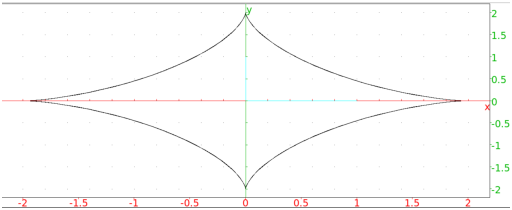

24.16.1 Finding a point dividing a segment in the harminic ratio
k
The
division_point
command finds a point dividing a segment is a given ratio.
division_point
takes three arguments:
a
,
b
, two complex numbers or points.
k
, a complex number.
division_point(
a
,
b
,
k
)
returns and draws
z
where (
z
−
a
)/(
z
−
b
)=
k
.
Examples
A
:=
point
(1/2+3
i
/2);
B
:=
point
(2+
i
);
D
:=
division_point
(
A
,
B
,3+
i
)

affix
(
D
)
5
2
+
i
2